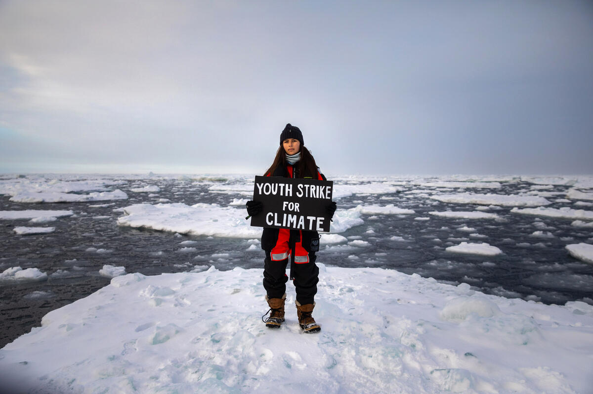

您知道嗎？
近北極海城市「阿爾漢格爾斯克 Arkhangelsk」，
2019年5月中氣溫達攝氏29度，比往年平均氣溫高出17度。
海冰量來到歷年次低，北極沒有海冰會怎樣？:
- 北極海冰的減少，與氣候變遷及暖化狀況有關。人類製造的二氧化碳等溫室氣體，釋放至大氣中使二氧化碳濃度升高，也加速全球暖化。科學家們持續在每年 9 月觀察夏季海冰，因為這通常是北半球夏季融雪季節結束的時間，北極冰量會達到最低點，也就是海冰最低點（sea ice minimum）。
- 那麼，北極沒有海冰會怎樣？海冰的存在不但有助於極地動物的生存，也能幫助調節地球的溫度。當太陽光照射地球，海冰就像是一面平滑的大鏡子，能夠反射太陽光線和熱能。然而，隨著覆蓋地球的海冰逐漸消失，海洋吸收了熱能，造成溫度慢慢升高，甚至高過平均溫度，直接影響海洋生態。
北極區年平均升溫高達攝氏3度！
- 如果地球的年平均升溫超過攝氏1.5度，世界將經歷不可逆轉的氣候危機：嚴重的乾旱，水患和溫度急遽上升。
- 但事實證明，北極地區的年平均升溫已經超過了攝氏1.5度，而且是3度。然而，最危險的是土壤溫度，近幾年土壤的溫度上升了8度，使永凍土開始逐漸融化。
- 